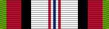

Afghanistan Campaign Medal
Service awardACM
For service in Afghanistan in support of Operation Enduring Freedom (and later operations).
Check your eligibility and build your ribbon rackHow you get it
You earn this by meeting the requirements. No recommendation is needed. If it's missing from your record, current members can have their MPF add it. Veterans can request it from AFPC with a Standard Form 180 and supporting documents.
You qualify if any of these apply
- Assigned or attached to a unit participating in the operation for 30 consecutive or 60 nonconsecutive days in Afghanistan
- Regularly assigned aircrew flying sorties into, out of, within, or over Afghanistan for 30 consecutive or 60 nonconsecutive days (one day per day flown)
- Engaged in actual combat against the enemy in Afghanistan, regardless of time in country
- Killed, wounded, or injured requiring medical evacuation from Afghanistan while on official duties
Quick facts
- Category
- Campaign and service
- Type
- Service award
- Authorized devices
- A bronze or silver star will be worn to denote campaign service
- WAPS points
- 0
- Position in the AFPC listing
- 49 of 91 (listed in order of precedence)
Full AFPC fact sheet text
Background
The Afghanistan Campaign Medal was established by Public Law 108-234, signed into law by President George W. Bush on May 28, 2004, and implemented by Executive Order 13363, signed by President Bush on Nov. 29, 2004.
Criteria
A) To be eligible for the Afghanistan Campaign Medal, a service member must be assigned or attached to a unit participating in Operation ENDURING FREEDOM for 30 consecutive days or 60 nonconsecutive days in Afghanistan or meet one of the following criteria:
1) Be engaged in actual combat against the enemy and under circumstances involving grave danger of death or serious bodily injury from enemy action, regardless of the time in Afghanistan.
2) While participating in Operation ENDURING FREEDOM or on official duties, regardless of time, is killed, wounded, or injured requiring medical evacuation from Afghanistan.
B) While participating as a regularly assigned aircrew member flying sorties into, out of, within, or over Afghanistan in direct support of Operation ENDURING FREEDOM; each day that one or more sorties are flown in accordance with these criteria shall count as one day towards the 30 consecutive or 60 nonconsecutive day requirement.
Service members who qualified for the Global War on Terrorism Expeditionary Medal by reason of service in Afghanistan between Oct. 24, 2001 and April 30, 2005 shall remain qualified for that medal. However, any service member who wishes to do so may be awarded the Afghanistan Campaign Medal in lieu of the Global War on Terrorism Expeditionary Medal for that timeframe of service. Additionally, any Army Soldier authorized the arrowhead device may be awarded the Afghanistan Campaign Medal with arrowhead device in lieu of the Global War on Terrorism Expeditionary Medal with arrowhead device.
No service member shall be entitled to both the Global War on Terror Expeditionary Medal and the Afghanistan Campaign Medal for the same act, achievement, or period of service.
Only one award of the Afghanistan Campaign Medal may be authorized for any individual.
In April 2008, the DOD authorized campaign stars to recognize service members for participating in the following campaigns:
-Liberation of Afghanistan: Sept. 11, 2001 – Nov. 30, 2001
-Consolidation I: Dec. 1, 2001 – Sept. 30, 2006
-Consolidation II: Oct. 1, 2006 – Nov. 30, 2009
-Consolidation III: Dec. 1, 2009 – June 30, 2011
-Transition I: July 1, 2011 – Dec. 31, 2014
-Transition II (Note 1): Jan. 1, 2015 – TBD
**Note 1: For Operation FREEDOM's SENTINEL pursuant to USD(P&R) memorandum dated Feb. 13, 2015, titled, "Afghanistan Campaign Medal – Operation FREEDOM's SENTINEL and Transition II Campaign Phase."
One bronze campaign star shall be worn for each campaign served. A silver campaign star will be worn instead of five bronze stars.
Medal description
Obverse: In the lower half of a bronze medallion, a range of mountains; in the upper half of the medallion, a map of Afghanistan. Following the contour of the medal is the inscription "Afghanistan Campaign."
Reverse: In the center of a bronze medallion, a radiating demi-sun superimposed by an eagle's head facing to the viewer's left. Across the bottom half of the reverse is the three-line inscription "For Service in Afghanistan."
Ribbon description
The color combination of the ribbon represents the colors of the new Afghanistan flag as well as the United States and its Allies. The ribbon has central pinstripes of red/white/blue/white/red, bordered by larger stripes of white, which are in turn bordered by black, red and green.
Authorized devices
A bronze or silver star will be worn to denote campaign service
Source: Afghanistan Campaign Medal fact sheet, Air Force's Personnel Center